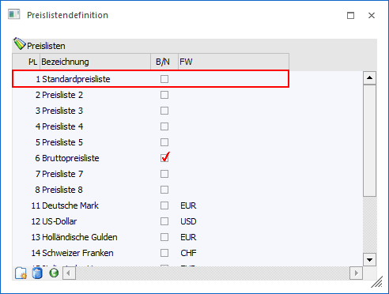
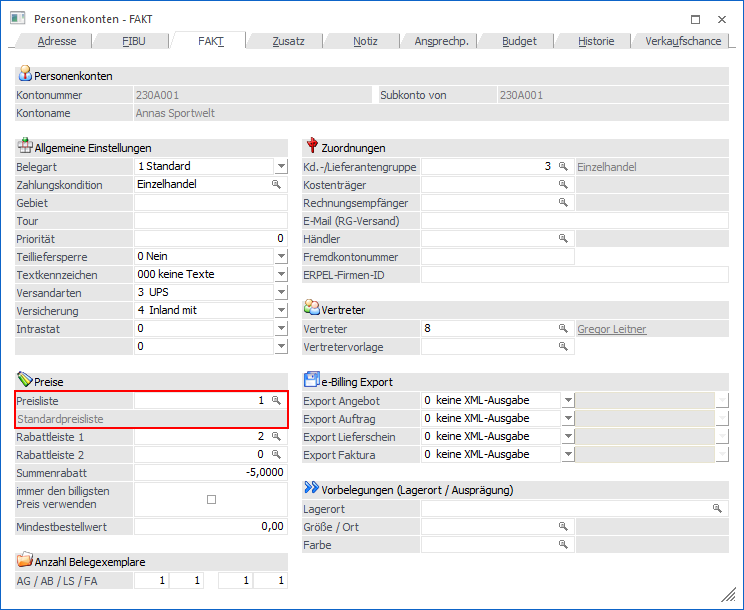
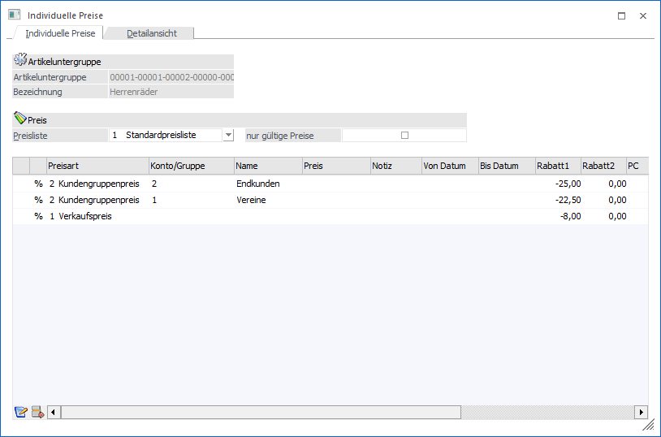

Die Preisfindung der WinLine findet auf Grundlage der folgenden Elemente statt:
Ø Preisliste
Die Preisliste stellt das Bindeglied zwischen Personenkonto und Artikel dar.
Ø Preishierarchie
Aufgrund der Preisliste kann eine Vielzahl von Preisen für einen Artikel bei einem Personenkonto gelten. Diese Preise werden auf Grundlage der folgenden Hierarchie analysiert (die Suche erfolgt von "Unten nach Oben") und der "wichtigste" Preis herausgesucht:
ü (1)1. allg. VK
ü a. Menge
ü b. Datum
ü c. Datum und Menge
ü (1)2. Kundengruppe
ü a. Menge
ü b. Datum
ü c. Datum und Menge
ü (1)3. individuelle Preisliste
ü a. Menge
ü b. Datum
ü c. Datum und Menge
ü (1)4. Gruppenkontrakte
ü (1)5. individuelle Kontrakte
Hinweis
Ob Kontraktpreise in der Belegerfassung mit einbezogen werden sollen (d.h. auch in der Preisfindung Berücksichtigung finden), kann in den FAKT-Parametern (Belege - Kontrakte - Option "Beim Erfassen von Belegen werden") definiert werden.
Voraussetzungen
Ø Preisliste
Im Programm "Preislistendefinition" (WinLine FAKT - Stammdaten - Preisstammdaten) werden die Preislisten definiert.

Ø Personenkonto
Im Personenkonto (WinLine FAKT - Stammdaten - Konten - Personenkonten) muss im Register "FAKT" eine Standardpreisliste (Feld "Preisliste") hinterlegt werden.

Ø Artikelstamm
Im Artikelstamm (WinLine FAKT - Stammdaten - Artikelstamm - Artikel) erfolgt in der Preistabelle (Register "Preise" - Unterregister "Preise") die Definition der einzelnen Preise. Hierbei spricht man von sogenannten "Preislisteneinträgen". Neben der Eingabe der Preisliste können u.a. folgende Elemente pro Preiszeile erfasst werden:
ü Preiskennzeichen (Auswahl, ob es sich um einen Preiseintrag, einen Rabatteintrag oder einen Preis- und Rabatteintrag handelt)
Hinweis
In einem Artikel sollten zur Übersicht / Nachvollziehbarkeit der Preisfindung entweder nur Einträge des Typs "0 - Preis und Rabatt" oder der Typen "1 - Preis" und ggfs. "2 - Rabatt" (d.h. gemischt) vorkommen.
Wenn es einzelne Einträge für den Preis und die Rabatte gibt, dann wird im späteren Verlauf nach einem Preis und anschließend nach einem Rabatt gesucht und die Kombination in die Belegerfassung übergeben.
Achtung
Von der Preishierarchie her ist eine Preiszeile mit dem Typ "0 - Preis und Rabatt" immer hochwertiger als "1 - Preis" und "2 - Rabatt".
ü Preisart (Auswahl, ob es sich um einen allg. Preis, einen Kunden/Lieferantengruppenpreis oder einen Kunden- bzw. Lieferantenspezifischen Preis handelt)
ü Preis (Hinterlegung des Preises)
ü Rabatt in % (Pro Preiszeile können 2 Zeilenrabatte hinterlegt werden)
ü Datum von / bis (Gültigkeitszeitraum des Preises)
ü Ab Menge (Ab welcher Stückzahl gilt der Preis)
Ø Artikeluntergruppe
Neben dem Artikelstamm kann ein Preis bzw. ein Rabatt auch in der zugewiesenen Artikeluntergruppe definiert werden.

Hinweis
In der Praxis wird in einem Artikel ein Preis (Preistyp "1 - Preis) und in der Artikeluntergruppe ein zugehöriger Rabatt (Preistyp "2 - Rabatt") hinterlegt. Bei der Preisfindung wird dann zuerst im Artikel und anschließend in der Artikeluntergruppe nach passenden Preiseinträgen gesucht.